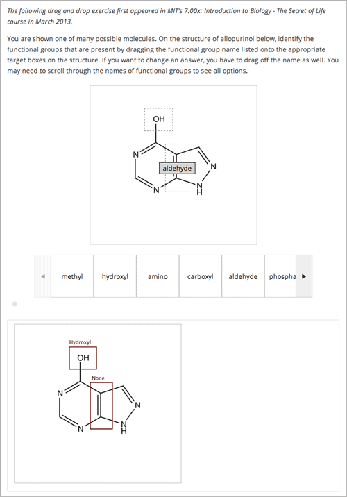

10.12. Drag and Drop Problem (Deprecated)#
Note
EdX does not support this problem type.
This drag and drop problem type has been replaced by a newer drag and drop problem type. The newer drag and drop problem type includes significant improvements and you should use it for any new course development. For more information about the replacement drag and drop problem type, see Drag and Drop Problem.
Warning
This deprecated drag and drop problem type is not accessible for learners with some disabilities, and it does not work correctly on mobile phones and other devices that use touch screen interfaces. If you use this kind of problem, make sure that you include an alternative for learners who cannot access drag and drop problems, or leave these problems ungraded.
For more information about creating accessible content, see Accessibility Best Practices for Developing Course Content.
The Show Answer button does not work for drag and drop problems. By default, the Show Answer option is set to Never. If you change this option in the problem component, a Show Answer button appears in the LMS, but the button does not work.
In drag and drop problems, learners respond to a question by dragging text or objects to a specific location on an image.
10.12.1. Adding a Drag and Drop Problem#
Before you can include problems that use this deprecated problem type in your course, you must configure your course to add unsupported problems.
To create a drag and drop problem, you upload the image that you want learners to drag labels onto, and then create a problem component.
On the Files & Uploads page, upload your image file. For more information about uploading files, see Adding Files to a Course.
In the unit where you want to create the problem, click Problem under Add New Component, and then click the Advanced tab.
Click Drag and Drop.
In the component that appears, click Edit.
In the component editor, replace the example text with the text of your problem.
In the
<drag_and_drop_input>tag, replace https://studio.edx.org/c4x/edX/DemoX/asset/L9_buckets.png with the URL of your image file on the Files & Uploads page (for example, /static/Image.png).For at least one
<draggable>tag, replace the text of the label attribute with the text of the label you want learners to drag. For example, if you want learners to drag the word “Iceland” onto your image, the new tag would resemble the following:<draggable id="1" label="Iceland"/>
Repeat the previous step for all the labels that you want to use. Make sure that the id attribute is different for each
<draggable>tag.Determine the coordinates and radius of the correct area on the image.
Under
correct_answer = {, add an entry for each label, using the following format. These values are in pixels:'id': [[x coordinate, y coordinate], radius]For example, if your image is 600 pixels wide and 400 pixels high, and you want your learners to drag the Iceland label to an area in the upper-left part of the image and drag a Sweden label near the lower-right part of your image, the code would resemble the following (where 2 is the ID for the Sweden label).
correct-answer = { '1': [[50, 50], 75] '2': [[550, 350], 75]}
Note
Make sure the code contains the closing curly brace (
}).Click Save.
10.12.1.1. Sample Drag and Drop Problem Code#
To create the drag and drop problem that appears in the image above, you download two files from edX, upload these files to the Files & Uploads page, and then add the code for the problem to a problem component.
Download the following files from edX:
Allopurinol.gif
AllopurinolAnswer.gif
To download both these files in a .zip archive, click http://files.edx.org/DragAndDropProblemFiles.zip.
Upload the Allopurinol.gif and AllopurinolAnswer.gif files to the Files & Uploads page.
In the unit where you want to create the problem, click Problem under Add New Component, and then click the Advanced tab.
Click Drag and Drop.
In the component that appears, click Edit.
In the component editor, replace the example code with the following code.
Click Save.
Problem Code:
<problem>
<p> Allopurinol is a drug used to treat and prevent gout, a very painful form of arthritis. Once only a “rich man’s disease”, gout has become more and more common in recent decades – affecting about 3 million people in the United States alone. Deposits of needle-like crystals of uric acid in connective tissue or joint spaces cause the symptoms of swelling, stiffness and intense pain. Individuals with gout overproduce uric acid because they cannot eliminate it efficiently. Allopurinol treats and prevents gout by stopping the overproduction of uric acid through inhibition of an enzyme required for the synthesis of uric acid. </p>
<p> You are shown one of many possible molecules. On the structure of allopurinol below, identify the functional groups that are present by dragging the functional group name listed onto the appropriate target boxes on the structure. If you want to change an answer, you have to drag off the name as well. You may need to scroll through the names of functional groups to see all options. </p>
<customresponse>
<drag_and_drop_input no_labels="true" one_per_target="true" target_outline="true" img="/static/Allopurinol.gif">
<draggable can_reuse="true" label="methyl" id="1"/>
<draggable can_reuse="true" label="hydroxyl" id="2"/>
<draggable can_reuse="true" label="amino" id="3"/>
<draggable can_reuse="true" label="carboxyl" id="4"/>
<draggable can_reuse="true" label="aldehyde" id="5"/>
<draggable can_reuse="true" label="phosphate" id="6"/>
<draggable can_reuse="true" label="sulfhydryl" id="7"/>
<draggable can_reuse="true" label="phenyl" id="8"/>
<draggable can_reuse="true" label="none" id="none"/>
<target id="0" h="53" w="66" y="55.100006103515625" x="131.5"/>
<target id="1" h="113" w="55" y="140.10000610351562" x="181.5"/>
</drag_and_drop_input>
<answer type="loncapa/python">
correct_answer = [
{'draggables': ['2'], 'targets': ['0' ], 'rule':'unordered_equal' },
{'draggables': ['none'], 'targets': ['1' ], 'rule':'unordered_equal' }]
if draganddrop.grade(submission[0], correct_answer):
correct = ['correct']
else:
correct = ['incorrect']
</answer>
</customresponse>
<solution>
<img src="/static/AllopurinolAnswer.gif"/>
</solution>
</problem>
10.12.2. Drag and Drop Problem XML#
<problem>
<customresponse>
<p>Drag each word in the scrollbar to the bucket that matches the number of
letters in the word.</p>
<drag_and_drop_input img="https://studio.edx.org/c4x/edX/DemoX/asset/L9_buckets.png">
<draggable id="1" label="a"/>
<draggable id="2" label="bog"/>
<draggable id="3" label="droll"/>
<draggable id="4" label="oboe"/>
<draggable id="5" label="swain"/>
<draggable id="6" label="in"/>
<draggable id="7" label="onyx"/>
<draggable id="8" label="of"/>
<draggable id="9" label="tap"/>
<draggable id="10" label="strop"/>
<draggable id="11" label="few"/>
</drag_and_drop_input>
<answer type="loncapa/python">
correct_answer = {
'1': [[70, 150], 121],
'6': [[190, 150], 121],
'8': [[190, 150], 121],
'2': [[310, 150], 121],
'9': [[310, 150], 121],
'11': [[310, 150], 121],
'4': [[420, 150], 121],
'7': [[420, 150], 121],
'3': [[550, 150], 121],
'5': [[550, 150], 121],
'10': [[550, 150], 121]}
if draganddrop.grade(submission[0], correct_answer):
correct = ['correct']
else:
correct = ['incorrect']
</answer>
</customresponse>
</problem>
<problem>
<customresponse>
<p>Label the hydrogen atoms connected with the left carbon atom.</p>
<drag_and_drop_input img="https://studio.edx.org/c4x/edX/DemoX/asset/ethglycol.jpg"
target_outline="true" one_per_target="true" no_labels="true"
label_bg_color="rgb(222, 139, 238)">
<draggable id="1" label="Hydrogen" />
<draggable id="2" label="Hydrogen" />
<target id="t1_o" x="10" y="67" w="100" h="100"/>
<target id="t2" x="133" y="3" w="70" h="70"/>
<target id="t3" x="2" y="384" w="70" h="70"/>
<target id="t4" x="95" y="386" w="70" h="70"/>
<target id="t5_c" x="94" y="293" w="91" h="91"/>
<target id="t6_c" x="328" y="294" w="91" h="91"/>
<target id="t7" x="393" y="463" w="70" h="70"/>
<target id="t8" x="344" y="214" w="70" h="70"/>
<target id="t9_o" x="445" y="162" w="100" h="100"/>
<target id="t10" x="591" y="132" w="70" h="70"/>
</drag_and_drop_input>
<answer type="loncapa/python">
correct_answer = [{
'draggables': ['1', '2'],
'targets': ['t2', 't3', 't4' ],
'rule':'anyof'
}]
if draganddrop.grade(submission[0], correct_answer):
correct = ['correct']
else:
correct = ['incorrect']
</answer>
</customresponse>
</problem>
10.12.3. Targets on Draggables#
Sometimes it is not enough to have targets only on the base image, and all of the draggables on these targets. If a complex problem exists where a draggable must become itself a target (or many targets), then the following extended syntax can be used.
...
<draggable {attribute list}>
<target {attribute list} />
<target {attribute list} />
<target {attribute list} />
...
</draggable>
...
The attribute list in the tags above (draggable and target) is the same
as for normal draggable and target tags. The only difference is when
you will be specifying inner target position coordinates. Use the x and
y attributes to set the offset of the inner target from the upper-left
corner of the parent draggable (that contains the inner target).
10.12.3.1. Limitations of targets on draggables#
Currently there is a limitation to the level of nesting of targets.
Even though you can pile up a large number of draggables on targets that themselves are on draggables, the drag and drop problem will be graded only if there is a maximum of two levels of targets. The first level are the base targets. They are attached to the base image. The second level are the targets defined on draggables.
Another limitation is that the target bounds are not checked against other targets.
You must make sure that there is no overlapping of targets. You should also ensure that targets on draggables are smaller than the actual parent draggable. Technically this is not necessary, but from the usability perspective it is desirable.
You can have targets on draggables only in the case when there are base targets defined (base targets are attached to the base image).
If you do not have base targets, then you can only have a single level of nesting (draggables on the base image). In this case the client side will be reporting (x,y) positions of each draggable on the base image.
10.12.4. Correct answer format#
For specifying answers for targets on draggables, see Answer format for targets on draggables.
There are two correct answer formats: short and long.
In short form, the correct answer is mapping of draggable_id to
target_id:
correct_answer = {'grass': [[300, 200], 200], 'ant': [[500, 0], 200]}
correct_answer = {'name4': 't1', '7': 't2'}
In long form, the correct answer is list of dicts. Every dict has 3 keys:
draggables, targets and rule. For example:
correct_answer = [
{
'draggables': ['7', '8'],
'targets': ['t5_c', 't6_c'],
'rule': 'anyof'
},
{
'draggables': ['1', '2'],
'targets': ['t2_h', 't3_h', 't4_h', 't7_h', 't8_h', 't10_h'],
'rule': 'anyof'
}]
“Draggables” is the list of draggable IDs. “Target” is the list of target IDs that draggables must be dragged to.
Caution
Draggables in dicts inside the correct_answer list must not intersect.
Wrong (for draggable id 7):
correct_answer = [
{
'draggables': ['7', '8'],
'targets': ['t5_c', 't6_c'],
'rule': 'anyof'
},
{
'draggables': ['7', '2'],
'targets': ['t2_h', 't3_h', 't4_h', 't7_h', 't8_h', 't10_h'],
'rule': 'anyof'
}]
The values for rule follow.
exact: Targets for draggable IDs inuser_answerare the same as targets from the correct answer. For example, for draggables 7 and 8, the user must drag 7 to target1 and 8 to target2 if thecorrect_answeris:correct_answer = [ { 'draggables': ['7', '8'], 'targets': ['tartget1', 'target2'], 'rule': 'exact' }]
unordered_equal: Allows draggables be dragged to targets unordered. For learners to drag 7 to target1 or target2 and 8 to target2 or target1 and 7 and 8 must be in different targets, then correct answer must be:correct_answer = [ { 'draggables': ['7', '8'], 'targets': ['tartget1', 'target2'], 'rule': 'unordered_equal' }]
anyof: Allows draggables to be dragged to any target. For learners to drag 7 and 8 to target1 or target2, any of these are correct with the anyof rule:correct_answer = [ { 'draggables': ['7', '8'], 'targets': ['tartget1', 'target2'], 'rule': 'anyof' }]
If can_reuse is true, then you have draggables a,b,c and 10 targets. These
will allow you to drag 4 a draggables to [target1, target4,
target7, target10]; you do not need to write a four times. Also
this will allow you to drag the b draggable to target2 or target5 for
target5 and target2.:
correct_answer = [
{
'draggables': ['a'],
'targets': ['target1', 'target4', 'target7', 'target10'],
'rule': 'unordered_equal'
},
{
'draggables': ['b'],
'targets': ['target2', 'target5', 'target8'],
'rule': 'anyof'
},
{
'draggables': ['c'],
'targets': ['target3', 'target6', 'target9'],
'rule': 'unordered_equal'
}]
Sometimes you want to allow learners to drag only two b draggables. In this
case you should use the anyof+number or unordered_equal+number rule:
correct_answer = [
{
'draggables': ['a', 'a', 'a'],
'targets': ['target1', 'target4', 'target7'],
'rule': 'unordered_equal+number'
},
{
'draggables': ['b', 'b'],
'targets': ['target2', 'target5', 'target8'],
'rule': 'anyof+number'
},
{
'draggables': ['c'],
'targets': ['target3', 'target6', 'target9'],
'rule': 'unordered_equal'
}]
When there are no multiple draggables per targets (one_per_target=``true``),
for the same number of draggables, anyof is equal to unordered_equal.
If can_reuse=true, then you must use only the long form of the correct
answer.
10.12.4.1. Answer format for targets on draggables#
As with the cases described above, an answer must provide precise positioning for each draggable (on which targets it must reside). In the case when a draggable must be placed on a target that itself is on a draggable, then the answer must contain the chain of target-draggable-target.
For example, suppose we have three draggables - up, s, and p.
Draggables s and p have targets on themselves. More specifically,
p has three targets - 1, 2, and 3. The first requirement is
that s and p are positioned on specific targets on the base image. The
second requirement is that draggable up is positioned on specific targets
of draggable p. Below is an excerpt from a problem:
<draggable id="up" icon="/static/images/images_list/lcao-mo/up.png" can_reuse="true" />
<draggable id="s" icon="/static/images/images_list/lcao-mo/orbital_single.png" label="s orbital" can_reuse="true" >
<target id="1" x="0" y="0" w="32" h="32"/>
</draggable>
<draggable id="p" icon="/static/images/images_list/lcao-mo/orbital_triple.png" can_reuse="true" label="p orbital" >
<target id="1" x="0" y="0" w="32" h="32"/>
<target id="2" x="34" y="0" w="32" h="32"/>
<target id="3" x="68" y="0" w="32" h="32"/>
</draggable>
...
correct_answer = [
{
'draggables': ['p'],
'targets': ['p-left-target', 'p-right-target'],
'rule': 'unordered_equal'
},
{
'draggables': ['s'],
'targets': ['s-left-target', 's-right-target'],
'rule': 'unordered_equal'
},
{
'draggables': ['up'],
'targets': ['p-left-target[p][1]', 'p-left-target[p][2]', 'p-right-
target[p][2]', 'p-right-target[p][3]',],
'rule': 'unordered_equal'
}
]
Note that you must specify rules for all draggables, even if a draggable gets included in more than one chain.
10.12.5. Grading logic#
The learner’s answer and the correct answer are parsed to the same format.
group_id: group_draggables, group_targets, group_rule
group_idis ordinal number, for every dict in correct answer incrementalgroup_idis assigned: 0, 1, 2, …Draggables from the user answer are added to the same group_id where identical draggables from the correct answer are, for example:
If correct_draggables[group_0] = [t1, t2] then user_draggables[group_0] are all draggables t1 and t2 from the user answer: [t1] or [t1, t2] or [t1, t2, t2] etc..
For every group from the user answer, for that group’s draggables, if
numberis in the group rule, set() is applied. Ifnumberis not in rule, set is not applied:set() : [t1, t2, t3, t3] -> [t1, t2, ,t3]
For every group, at this step, draggables lists are equal.
For every group, lists of targets are compared using the rule for that group.
10.12.5.1. Set and +number cases#
set() and +number are needed only for the case of reusable draggables.
For other cases there are no equal draggables in list, so set() does nothing.
The
set()operation allows you to create a rule for the case of “any number of the same draggable can be dragged to targets”:{ 'draggables': ['draggable_1'], 'targets': ['target3', 'target6', 'target9'], 'rule': 'anyof' }
The
numberrule is used for the case of reusable draggables, when you want to fix number of draggable to drag. In this example only two instances of draggables_1 are allowed to be dragged:{ 'draggables': ['draggable_1', 'draggable_1'], 'targets': ['target3', 'target6', 'target9'], 'rule': 'anyof+number' }
Note, that in using rule
exact, one does not neednumber, because you cannot recognize from the user interface which reusable draggable is on which target. For example:{ 'draggables': ['draggable_1', 'draggable_1', 'draggable_2'], 'targets': ['target3', 'target6', 'target9'], 'rule': 'exact' } Correct handling of this example is to create different rules for draggable_1 and draggable_2.
For
unordered_equal(orexact) you don’t neednumberif you have only the same draggable in the group, as the target length will provide the constraint for the number of draggables:{ 'draggables': ['draggable_1'], 'targets': ['target3', 'target6', 'target9'], 'rule': 'unordered_equal' }
This means that only
draggable_1can be dragged.But if you have more than one different reusable draggable in the list, you may use the
numberrule:{ 'draggables': ['draggable_1', 'draggable_1', 'draggable_2'], 'targets': ['target3', 'target6', 'target9'], 'rule': 'unordered_equal+number' }
If you do not use number, the draggables list will be set to
[draggable_1, draggable_2].